第五章 寻找非凡大牛股
你有没有梦想过头一天买进一只股票，第二天一觉醒来惊喜地发现那家公司已被高价收购？在本章中，我会告诉你如何让这个梦想变成现实，至少偶尔实现一次。另外，你还会学到我总结出来的鲜为人知的技术方法，它能帮助你获得惊人利润。
我们来看看所谓的并购美梦。但这对于大多数投资者来说，却是财务上的噩梦。我见过投资者根据一个又一个收购传言不断买入股票，最后却没有一个传言成真。当他们等待那些其实永远不会公布的收购公告时，他们的损失却累积到可怕的程度。为什么这么多投资者要去追寻这样彩虹般的机会？这其实是一个简单的心理问题。
首先，因为贪婪。人们都希望一夜暴富，因此总是期望“这一次”就是那个暴富的机会。
其次，心理学上有个理论叫作“间歇性强化”，就是说如果一个动物偶然得到了它想要的，即使发生这种情况的概率很低，它也会不断重复这个行为以便得到更多。在实验中这个理论被反复证明。如果一只老鼠在经过迷宫时得到过奶酪，哪怕只有一次，这也会驱使它不断在迷宫中寻找，即使奶酪早就不放在那儿了。人类和动物没什么区别。为什么我们要在拉斯维加斯玩老虎机，或者买彩票？究其原因就是赌场中偶尔一次的大获全胜，或是新闻头条出现的某人买彩票中大奖的报道，刺激着人们不断做梦。
只要你控制好这种一夜暴富的欲望，在玩老虎机时只投入一定数量以内的硬币，或者只偶尔买一次彩票，那么这种人类所具有的贪婪本性就不是什么大问题了。但如果你被贪婪驱使着不断根据传言买入股票，那就是很严重的问题了。它会让你赔得很惨，几百个这类股票中可能有一个会成为牛股，而其他的却会以第四阶段的下跌而告终。这并非好的策略。
在并购热潮不断升级的过程中，越来越多的股票都因为相关的收购传言而上涨。这种游戏有聪明的玩法吗？当然有。玩法就存在于图形中。简单地按以下步骤玩就行了。
首先，仅用小部分资金参与此类投资。你买入的绝大多数股票应该来自你的研究成果。
其次，如果你听到了某个收购传言，判断它的来源。假设这个传言来自你的股票经纪人。如果在此之前他所推荐的股票都获得了收益，那么这就是个不错的消息来源；如果他之前给你推荐的股票都不靠谱，那么这个消息来源就非常值得怀疑。
但是不能就此止步。现在回到我们前面所学的规则。将这只股票的图形找出来并仔细研究。如果这只股票像贝佛利公司（见图5-1）在1987年中期表现的那样，即便有关它的传言满天飞，也应该把它抛到脑后。
如果这只股票位于第四阶段，并且相对强度线的形状很糟糕，就应该立即离开这台“老虎机”。
如果这只股票已经大幅上涨，价格远远高于理想的买入点，就像安佳公司（见图5-2）在1987年中期28元附近那样，也不应该买入（安佳公司的股票应该在1987年初的14元附近买入。但是绝对不能买入已经过度上涨、回报／风险比率很低的股票，如1987年末的安佳公司）。
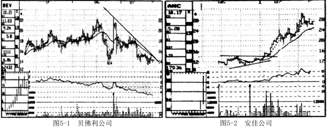
我宁可错过一只有上涨潜力的股票，也不愿买入一只回报／风险比率很低的股票。没能买入一只有上涨潜力的股票，你所损失的仅仅是可能的利润。就像坐公交车一样，就算错过了一辆，下一辆很快就会来。然而如果你在胜算不大的情况下惨败，你所损失的将是非常宝贵的本金。这里涉及一点数学。假如你的本金是5万元，当你损失了20%时，你持有的股票市值就变成了4万元。要捞回本钱，你下一次交易就得有25%的收益率。如果下一次交易再失败，情况就会更加不利，你需要在以后的交易中有更高的收益率才能回本。因此，遵守投资纪律和做出明智选择是时刻都要记住的操作要点。记住，即使我们错过了100只牛股，在这一年中只买入了10只股票，但只要其中的七八只表现不错，我们也能赚笔大钱。
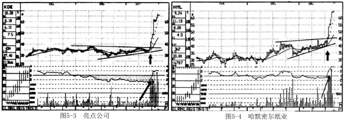
如果某只有收购传言的股票从图形上看很不错，但还没有向上突破，或者已经站上了阻力位但仍然在理想的买入点附近，我们该怎么办呢？
如果所有的指标都是向好的，即使没有传言你也会认真考虑是否买入它，那么这只股票就值得赌一把——收购的可能性较大。亮点公司在1987年中期的情况就是这样的（见图5-3）。不管有没有传言，当这只股票以巨量向上突破37元时，就是一个不错的买入对象。成交量明显放大、相对强度持续改善、不存在上方阻力。几周之后股价达到了67．25元时，汉森收购亮点公司的消息适时公布，这个时候就显示出当时的买入非常明智。
记住，我们之前讲的买入规则仍然适用。如果某只股票的成交量或者其他任何重要的指标偏负面，就不要考虑它。在辨别收购是否会发生时，有一个始终都要注意的指标，这就是成交量。特别是当收购的消息在接下来的几个星期内就会公布时，成交量尤其值得注意。几乎在所有临近收购的例子中，成交量都会不可思议地大幅增加。这是有道理的，因为越接近公布的日子，就有越多的人知道收购的消息。尽管不知道是谁走漏了消息，但事实是图形总会泄露消息，一次又一次，总是有某些人提前知道了消息并且据此买入。所以，要相信，对于任何一个即将公开的收购，其股票的成交量一定会显著增加。
现在我们来看看现实中几只股票的例子，它们都与并购相关，这样你就会更加清楚应该寻找什么样的股票。
仔细看一下图5-4哈默密尔纸业的图形。1986年中期，当时有传言说它可能被收购。但如果你当时并不知道关于这只股票的传言，你会怎么办？
根据我教给你的判断标准，你就可以知道，当它突破45元时就会成为一个很好的买入对象。
①整个市场趋势向好。
此外，②这只股票所在的行业也表现不错，行业内的其他几只股票走势较为强劲。
而且，其相对强度线位于正的区域并快速上升。
另一个利好的指标就是当它向上突破45元处的阻力区域之后，上档没有进一步的筹码供给。
最重要的是，成交量明显放大！要仔细研究此时成交量的变化，因为它是判断收购是否会发生的重要线索。这只股票的成交量不仅是在向上突破时巨量放大（这已经是一个乐观信号），而且从突破发生前的八个星期起就开始稳步放大，这才是真正的关键所在！即使你从没有听说过关于它的传闻，它也是你应该认真考虑的买入对象。在向上突破发生后的五个星期内，哈默密尔纸业股价从45．125元涨到65元，接着传出它被国际纸业公司收购的消息。
旁氏公司（见图5-5）在1987年初显示了与哈默密尔纸业相同的上涨模式。所有的技术指标也都显示这将是一只大牛股，不管你的经纪人有没有跟你说这只股票的消息。
市场趋势走牛，行业表现抢眼，上方没有重大的阻力区域，相对强度表现很好。成交量的放大更是确定买入最重要的一点。这只股票向上突破时的那周，周成交量达到历史最高。
因此，无论你是否听说过关于旁氏的传言，它都是值得买入的。每一个技术指标都显示你应该迅速买入，接着这只股票快速地从50元上涨到72元，让你这笔买入回报丰厚。
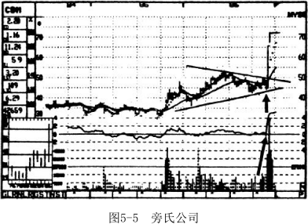
你明白这种方法了吗？即使你没有得到某只股票的任何消息，图形也会告诉你内幕：有些事情正在酝酿之中。就算不是收购，也是其他的事。这只股票飙升的可能性非常大。
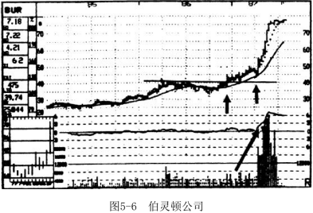
还有一个例子，我们把它放到显微镜下仔细观察，再一步步学习。1986年末，伯灵顿公司（见图5-6）的股票向上突破40元附近的阻力区域之后进入强势上涨的第二阶段。
所有的指标都是利好的，当股价再次向上突破时，该股可能成为一个追加买入的标的。不过，此时成交量的变化却不是特别显著，仅仅刚好满足两倍于前期平均成交量的标准，在接下来的几个星期里股价继续上涨。
在1987年4月初，令人兴奋的事情开始显露端倪了。市场上到处流传着伯灵顿要被收购的传言，这只股票以难以置信的巨额成交量再次向上突破50元处的阻力区。如果你已经持有它，这时是加仓的好时机；如果你此前没有买它，它当时的这种表现也可以使你放心买入。
在接下来的几个月里，伯灵顿的股票从55元上涨至77．5元。成交量在这个例子中再次提前向你泄露此次收购。
如果在了解了这些市场上曾经发生的案例之后，你仍然相信在收购消息公布之前，不会有人根据内幕消息交易，那么你确实太天真了。
下面还有两个实例，在各自的收购消息公布之前，这两只股票在图形上都显示出了征兆。在弗吕霍夫公司（见图5-7）的例子中，第一阶段形成了一个宽广的底部，阻力不大，相对强度线运行良好。最重要的是，成交量上出现了我们希望看到的明显放大的特征。因此，当它在1986年初向上突破27元时，应该买入，不管你是否听说了关于它的收购传言。这只股票迅速涨到近50元，给予了在向上突破时买入的人丰厚的回报。
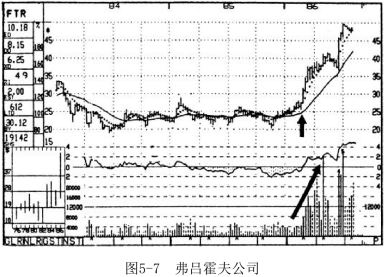
普罗拉托公司（见图5-8）也是一个令人兴奋的买入对象，呈现出类似的形态。如果你根据挖掘大牛股的标准买入了它，你会获得丰厚的回报。1986年末它在20．125元处向上突破了其下降趋势线，这时它的相对强度线进入了正的区域并且表现明显改善。此外，急剧放大的成交量也说明了24元附近的阻力区域很可能被突破。后来，这只股票涨到了40元。
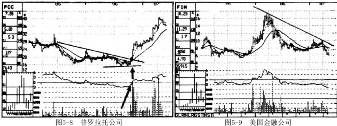
现在你应该清楚在寻找存在被收购可能的股票时必须注意什么了。如果股票处于第四阶段，再多的传言也掩饰不了这种不利局面，就像1987年的美国金融公司（见图5-9）一样。但如果我听说了关于某只股票的传言，而它从图形上看表现强劲——就像1986年的西夫韦公司（见图5-10）一样——我一定会把它纳入我的买入备选名单。当西夫韦向上突破40元，同时又有较好的相对强度线、上方没有大量筹码供给、成交量迅速放大时，我就会将它列入必须买入的名单，不管它是否会被收购。后来，就像我从本章开始到现在展示的每只股票（除了贝佛利和美国金融公司以外）一样，西夫韦公司也被收购了。
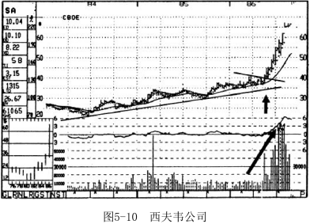
根据我以上所说的标准买入，你会惊讶地发现，你会经常买到那些只有内部人士才有机会买入的股票，尽管你并不知道确切的内幕消息。我在《专业价格分析者》中推荐恺撒世界公司、欧文斯-伊利诺伊公司、皮德蒙特航空公司和光谱达因公司（见图5-11至图5-14）的股票时就是这样的情况。后来这四家公司以及其他一些我推荐的公司，都成了被收购对象，它们的股票都在我推荐后的几个月里大幅上涨。我知道一些读者肯定会认为我是听到这些股票的一些消息后才做出推荐的，其实我的推荐仅是从图形分析中得来的。从现在开始，你也能像我一样。
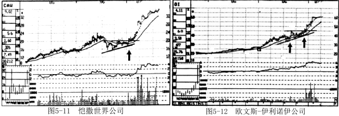
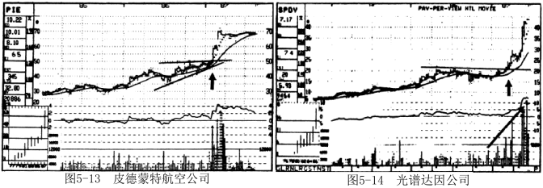
用三重标准来确认
我们要寻找的另一种形态也能产生非凡的利润，一般情况下，它与收购没有多大关系，但其结果同样令人惊叹，有时候甚至比被收购公司的股票更有利可图。
多年前我就发现了这种技术分析方法并在《专业价格分析者》上介绍过。请注意，尽管通过这种方法能发现一些令人难以置信的大牛股，但这种方法并不适合短线交易。激进的投资者可以通过这种方法发现潜在的大牛股，骑在大黑马上跑完整个上涨趋势。
在足球比赛中，一名能跑、能传球、能射门的球员对对方具有三重威胁。但要找出一名在三个方面都突出的球员却比较困难。对于股票来说也是一样：三种不同的利好指标必须集中地相互印证，这是很不容易的。
股票的价格必须位于均线的上方，这是基本要求。除此之外，还有下面三个重要标准必须达到。
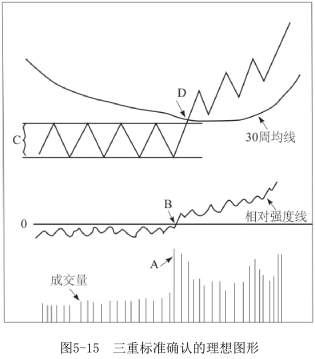
第一，必须有成交量信号。这是至关重要的！在向上突破时，市场上的优质股成交量总会显著地大于第一阶段底部任何一点的成交量。对于大牛股来说，成交量应不止两倍于前四周的平均成交量。而且，成交量的放大还应该持续一段时间。在最初的成交量大幅增加之后，应该出现连续几周成交量都比较大的情况。这个信号意味着市场对这只股票突然的高度关注以及未来大量的股票需求。因为这只股票已经开始快速上涨，稍有调整，买方就会迅速介入。如果股票回落太浅，不足以满足买方的需求，那么通常会形成恐慌性买盘。
非常显著的成交量（见图5-15中A点）是判断一只大牛股的关键标准，但它不是唯一标准。
第二个需要关注的标准就是相对强度（见图5-15中B点）。这是一个用来将真正的大牛股从一般的好股票中区分出来的非常重要的工具。
当第二阶段向上突破发生时，相对强度线必须进入正值区域，这非常重要！前面我们说过，即使某只股票的相对强度线位于负区域，但只要它在不断上升并且其他技术指标都不错，你也可以买入它。但要找到非同一般的大牛股，买入标准上不能有任何降低。如果向上突破之后，相对强度仍然处于负值区域，即使这只股票是一个不错的买入对象，并且能获得不错的收益，也是不符合要求的。
第三个标准是这只股票在向上突破之前要有大幅的上涨(注：第一浪)。
我知道这听起来很奇怪，因为我们都想以尽可能便宜的价格买入股票。但要找到能够带来巨额回报的强势牛股，这是一个非常重要的因素。如果一只股票在处于第一阶段时有较大的振幅，一旦它向上突破了，其表现很可能耀眼夺目。就像一名跳高选手在腾空跳起之前先要下蹲蜷缩获得动力一样，股票突破前的下跌让它获得了动力，一旦向上突破，其涨势就比较迅猛。一般来说，在向上突破发生前就已经上涨了40%~50%甚至更多的股票在接下来的几个月里表现最好。但这确实会加大短期风险，这就是我在前面强调这种类型的买入更适合投资者而非交易员的原因。
回到1971年，安东尼工业公司的股票完全满足这类大牛股的所有必要条件。成交量大约上涨到正常水平的四倍——一个明显的买入信号（见图5-16中A点）。
此外，成交量在接下来的几周里一直保持着较高的水平。相对强度线也上升至正的区域（见图5-16中B点）。
第三个重要的指标就是当安东尼工业公司的股票还处于第一阶段时，股价大幅震荡。其价格水平在5元支撑位和10元阻力位之间来回波动。当它在1971年末第一次向上突破10.125元时（见图5-16中D点），股价几乎已经上涨了100%！对大多数投资者来说这时是卖出的时机，因为股票已经处于超买状态了（超买是一个技术名词，指一只股票在短期内上涨过快，在继续上涨前将有短暂回调）。但我已经训练了你的眼力，而你也正在开始培养对图形的感觉，你看待此情形的眼光应该不同于一般投资者。
在D点，伴随着巨大的成交量，这只股票首次突破进入第二阶段。因匕，你应该只说出一个字——买！而不应该像普通大众那样以为这只股票已经“超买”或者“被高估”。在接下来的8个月，我们关于大牛股的理论成为现实，安东尼工业公司的股票上涨超过了300%。
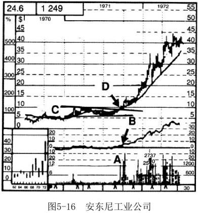
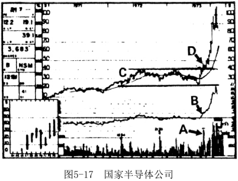
国家半导体公司（见图5-17）在1973年也展现了同样的赢家潜力。当时整个市场行情已经转熊，这时不应该大笔买入，而应该进行大量卖空操作，这样你在熊市中也能获利。但如果你碰上像国家半导体公司这样特别好的买入标的，你可以对冲自己的卖空部位。但是你得确信这只股票是一只特牛的股。因为在整个市场行情不好时，稍微差一点的股票就没有操作空间。
它符合我们前面所讲的三重标准，成交量比数周前的均量增加了几乎三倍（见图5-17中A点）。在突破发生后的几周，成交量依然保持了较高的水平。在向上突破进入第二阶段之前，相对强度线位于零值线附近，突破后它迅速并强有力地上升进入正的区域。
第三个重要信号就是在国家半导体公司的股票向上突破进入第二阶段之前，已经有相当大的涨幅。在D点——40.5元突破之前，这只股票从20元附近涨至40元，股价几乎翻倍。很多人认为在急剧的上涨之后，股价已经过高，但你心里比他们清楚。看看这个用三重指标确认的股票是多么强劲吧，国家半导体公司股价在接下来的3个月里火箭般上涨，涨幅超过150%——难以置信的600%年化收益率。这在任何时候都是了不起的涨幅，但在1973-1974年的熊市中，尤其令人印象深刻。因此，对这种形态要始终保持敏感，因为当你发现它时，你就要全面深入地去研究它。
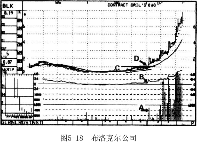
为了确保你已经掌握了这个重要的概念，我们再看几个大幅上涨的例子。
在1987年初，当布洛克尔公司（见图5-18）的股票在1．125元处从第一阶段向上突破时，其成交量急剧增加。成交量轻松超过了突破发生前几周的平均成交量的两倍，达到了五倍多。如此急剧的成交放大显示出大量资金对它很感兴趣，在大多数情况下这预示着股价会出现明显上涨。布洛克尔也不例外。
与前面相同，根据A、B、C三点就能轻易判断出这是一只大牛股。而从基本面上看，这只股票并无过人之处，负面消息还不少（在向上突破前，布洛克尔公司在八个季度中有六个季度都处于亏损状态），但技术指标已经泄露了秘密。
布洛克尔身处的行业表现强势，上方阻力有限，并且这个阻力位已经是一年半以前形成的了。还有，这只股票的第一阶段底部持续时间很长。除了这些利好的信号之外，它还满足我们为寻找大牛股所设定的三个标准。
首先，在第二阶段突破时的成交量很大，显示出这只股票背后有巨大的推动力。
其次，相对强度线一直在零值线周围，稍稍位于其上方。向上突破刚发生，相对强度线立即从零值线附近快速上升。
最后，尽管被较低的价格所掩饰，但在突破发生前股价也有了实质性的上涨。这只股票从0．375元的低点上涨至1．125元处的向上突破点——涨幅高达200%。但我们所预计的上涨才刚刚开始，在接下来的11个月，布洛克尔的股价上涨了600%。
碰到这样的股票是像摸黑打靶正中靶心那样仅仅由于运气很好吗？当然不是！虽然这些形态不是每天都有，也不是每周都有，但无疑它们会按照一定的周期形成。当你对股票形态的分析更加熟练时，你就会找出这样的形态，抓住那些值得投资的对象——这样的股票会有很多。
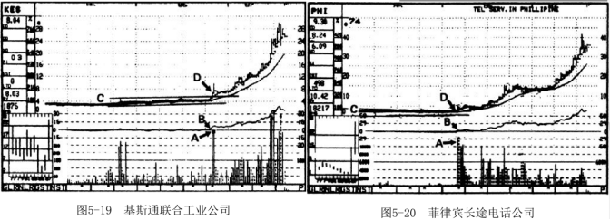
基斯通联合工业公司和菲律宾长途电话公司（见图5-19和图5-20）都符合我挑选大牛股的三个判断标准。和上面一样，结果都非常好！
非常有意思的是，当基斯通联合工业公司的股票在4．625元处向上突破时，最近一期滞后12个月的每股收益是－3．70元，许多市盈率的关注者担心这个公司正走在破产的路上。当该公司股价飙升到30元时，你认为它的每股盈利应该增加到多少？1987年中期，当基斯通联合工业股价涨至30元时，它前12个月累积盈利为每股－1．16元，公司仍然是亏损的！关于基本面分析和市盈率我就说到这儿。
这只股票底部的表现符合突破前股价须上涨40%甚至更多的标准，尽管从图上很难看出来（用对数或百分比图形就能解决这一问题）。当一只低价的股票快速上涨时，尽管上涨的百分比很大，但由于价格上涨的绝对值不高，因此看上去好像涨幅并不大。如果你发现了拥有这种图形的一只大牛股，重仓投资它，你得到丰厚回报的可能性会很大。
一旦你掌握了本章中这些非常重要的概念，你就知道应该如何去挖掘那些特殊的、收益极大的股票，并且你还能知道买入它们的正确时机。
测 试
为了帮助你提高，这里有几个股票突破的实例。但是在前两组的三幅股票图形中，只有一个最终成了大牛股。利用本章所述的标准，看看你能否在三个一组的图形中，挑选出每组里最终的那个大牛股。
1．
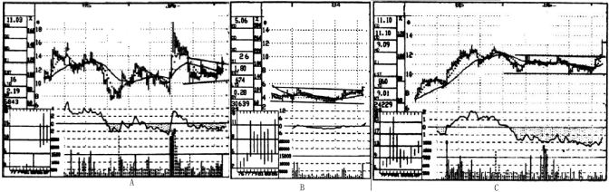
2．

3．这组中你会买入哪两只股票？
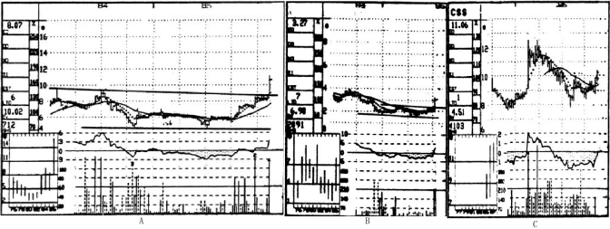
4.下面的三只股票都是不错的买入对象。正确 错误
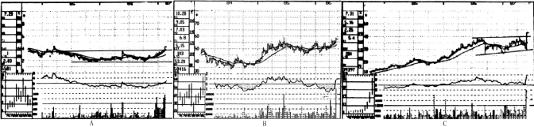
答 案
1.正确的选择是B，共和航空公司的股票。
它获得了三重标准确认，①向上突破时成交量放大超过三倍，②突破之前股价已经上涨超过50%，③相对强度线升至零值线以上。
成交量在接下来的几个月里继续放大，进一步确认了这只股票即将到来的上涨。1986年初共和航空被西北航空以每股17元的价格收购，让买入者大赚了一笔。
对A（马基高体育用品公司）来说，相对强度不算好，更重要的是，成交量并未达到突破前四周平均成交量的两倍。结果，这只股票小幅上涨至15.5元，接着在1987年中期返身下跌至8元。
对于股票C（城际天然气公司）来说，向上突破时成交量太小，所以根本不应该考虑它。它在12.25元处向上突破，8个月之后才上涨至15元。
2.在这组股票中，你应该买入C（爱克塞罗公司）。
该股成交量明显放大，相对强度稳健。应该在它向上突破55元时买入，几周以后它就被德事隆公司以77.5元的价格收购。
股票A（范多恩公司）的成交量表现平平，相对强度只是勉强过得去。在向上突破32元之后，这只股票在接下来的8个月里上涨至40元。
股票B（莱姆森公司）的相对强度较差，而成交量则更糟。图形上来看，它是三者中表现最差的，而且结果也如此。它在10.25元向上突破后仅仅上涨了不到1元，在1年半之后下跌至4元。
3.股票A（皇冠制衣公司）和股票B（国际蛋白质公司）都是很好的买入对象。
皇冠制衣公司符合我们所讲的三重标准，向上突破前股价已经上涨接近100%，突破时伴随成交量的明显放大，同时相对强度线上升进入正值区间。这只股票在9元处向上突破，8个月之后股价飙升至87．5元。
国际蛋白质公司也符合三重标准，在向上突破前其股价已经上涨超过50%，突破时伴随成交量的急剧放大，同时相对强度线上升进入了正值区间。不出意料，不到两年这只股票就上涨至20．75元。
而股票C（CSS工业公司），向上突破时成交量表现平平。尽管要比平均水平多出两倍，但却低于底部某几个星期的成交量水平。这只股票在10．125元处向上突破，6个月之后股价仅仅上涨至12元。
4.正确。这三只股票都是很好的买入对象。
股票A（GTI公司）符合三重标准，在3．5元处向上突破。4个月后股价涨至10元。
股票B（Sperry公司）也符合三重标准，成交量非常显著地放大，在向上突破57元时就应该买入。就在几个星期之后，这个公司就被伯勒斯公司以每股76.5元的价格收购。
对于股票C（哈科特公司）来说，其股价向上突破40元时，成交量明显放大、相对强度线位于正值区间并且在40元上方没有进一步的阻力，这时是买入它的好时机。所有这些利好的因素很快就得到了验证，这只股票在几个星期内迅速上涨至近60元。